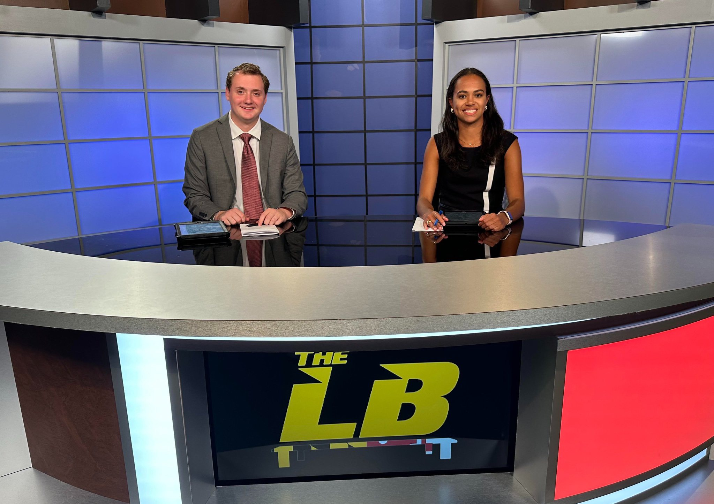

Drew Owens
My name is Drew Owens. I am a junior journalism major at the University of Maryland - College Park. At Maryland, I am studying journalism, with hopes to become a sports reporter. Some of the clubs that I am involved in are Terrapin Sports Central and Big Ten Student U, where I do production. After college, I plan to become a sideline reporter or sports anchor with dreams of working for ESPN.
Resume
Associate Producer/Reporter - Terrapin Sports Central (January 2023-Present)
Support news broadcast with program creation as a correspondent/reporter for sports events, working with show team to gather information and operating camera equipment during production. Tasks may include reading multiple news sources, teleprompter operator and show set-up and tear-down.
Production Member- Big Ten Student U (August 2023-Present)
Student produced live events that stream on B1G+ (Big Ten Plus). Learn to grow in new positions
within the sports broadcasting world such as camera direction, graphics, replay, and announcing.
General Assignment Writer - Testudo Times (July 2023-June 2024)
Write articles revolving Maryland sports. Keep students and people informed about what is going on with past and present Maryland athletes.
Social Media Manager and Sports Writer- Southern Maryland Senators Collegiate Baseball Team (June 2024-August 2024)
Produce social media content. Create gameday, postgame and other important graphs. Write up game recaps after every game.
Previous Jobs
Lifeguard - Eppley Recreation Center (March 2023-Present)
Observed and protected swimmers to deter safety concerns and to prevent facility violations. Executed routine duties to include cleaning the pool, washing the deck, and upholding the rules of the aquatic center. Provided excellent customer service to patrons by exemplifying a positive attitude.
Assistant Swim Coach (March 2022-Present)
Provide lessons to participant ensuring safe and proper swimming techniques. Promote a friendly and safe learning atmosphere for new swimmers. Develop and maintains positive relationships with swimmers. Participate in required swim instructor training.
Education: University of Maryland - College Park (August 2022-May 2026)
Best Work
Anchoring
This clip is when I anchored in early October. In this episode of The Left Bench, we preview the men's and women's basketball seasons, go around the NFL, and play a fun game at the end.
Gamer

This is a gamer that I filmed on September 20th, 2024. I attended the Maryland vs. Villanova football game and did a side package about quarterback Billy Edwards Jr. and wide receiver Tai Felton.
Writing

This clip is a writing clip that I got from my internship a while back. Over the summer I was the social media coordinator and sports writer for the Southern Maryland Senators Collegiate Baseball Team.
Segment

Go to 11:55 for my segment that I did for The Left Bench. This segment is about around the Big Ten, where I specified on football.
Contact
If you have any questions or want to know more about what I do you can contact me! Feel free to reach out!
Email: dmski619@gmail.com
Number: 301-758-3028